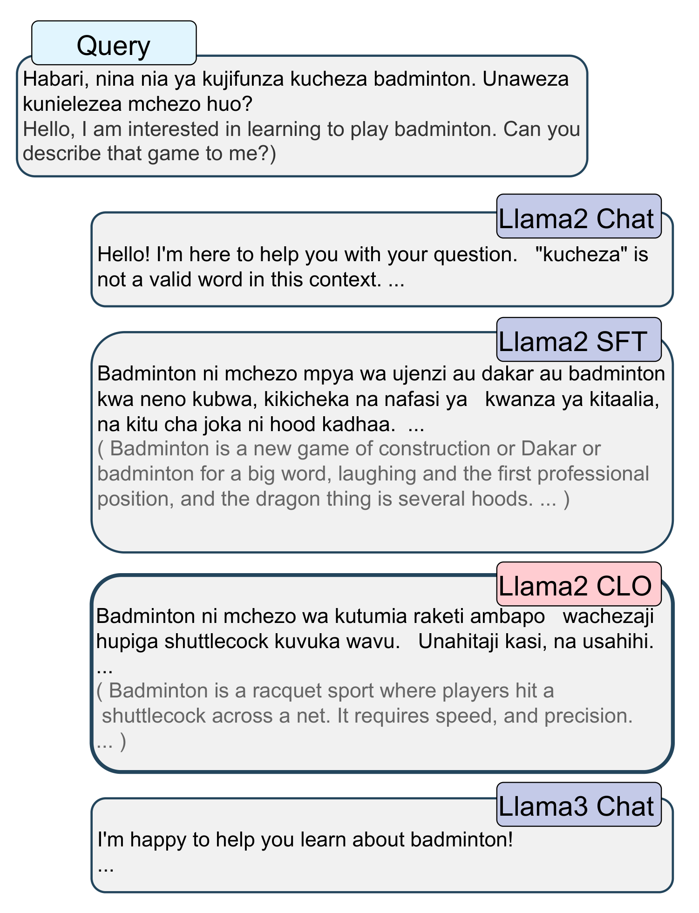

Cross-Lingual Optimization for Language Transfer in Large Language Models
ACL 2025 (Oral)
Korea University
*Equal contribution †Corresponding author

Abstract
Adapting large language models to other languages typically employs supervised fine-tuning (SFT) as a standard approach. However, it often suffers from an overemphasis on English performance, a phenomenon that is especially pronounced in data-constrained environments. To overcome these challenges, we propose Cross-Lingual Optimization (CLO) that efficiently transfers an English-centric LLM to a target language while preserving its English capabilities. CLO utilizes publicly available English SFT data and a translation model to enable cross-lingual transfer. We conduct experiments using five models on six languages, each possessing varying levels of resource. Our results show that CLO consistently outperforms SFT in both acquiring target language proficiency and maintaining English performance. Remarkably, in low-resource languages, CLO with only 3,200 samples surpasses SFT with 6,400 samples, demonstrating that CLO can achieve better performance with less data. Furthermore, we find that SFT is particularly sensitive to data quantity in medium and low-resource languages, whereas CLO remains robust. Our comprehensive analysis emphasizes the limitations of SFT and incorporates additional training strategies in CLO to enhance efficiency.
Motivation
English-centric language models show limited multilingual capabilities in two ways. They may fail to comprehend certain languages, or they may understand a language but still default to communicating in English.
When posed with a Swahili question, the Llama2 Chat model fails to comprehend Swahili adequately, while the Llama3 Chat model understands the query but is unable to generate responses in Swahili. Even the fine-tuned model, despite being trained with 6,400 Swahili data, still struggles to produce appropriate outputs in Swahili.
CLO builds on the hypothesis that simultaneously enhancing target language ability and aligning it with English facilitates efficient transfer.


Method
CLO assumes a base language model, a small amount of English SFT data, and a translation model that supports the target language. The process consists of two steps.
-
Step 1
Cross-lingual dataset preparation
Translate the English prompts and responses of an existing SFT dataset into the target language. For an English prompt, the English response is the chosen response and the translated response is the rejected one, which preserves English capability.
For a target-language prompt the mapping is reversed, which encourages the model to answer in the target language by relying on its underlying English knowledge.
-
Step 2
Cross-lingual optimization
A cross-lingual loss \(\mathcal{L}_{\text{CL}}\), modified from DPO, uses the paired data within the same batch to teach the correspondence between input and output languages. It is combined with an NLL loss \(\mathcal{L}_{\text{SFT}}\) computed only on target-language outputs, which mitigates the inherent English bias.
\[\mathcal{L}_{\text{CLO}} = \lambda \cdot \mathcal{L}_{\text{SFT}} + (1 - \lambda) \cdot \mathcal{L}_{\text{CL}}\]
The trade-off parameter \(\lambda\) is set to 0.5 for all models and languages, and only the attention layers are fine-tuned.
The experiments use 6,400 English samples from OpenAssistant, translated with the M2M100 1.2B model for a total of 12,800 samples (6,400 in English and 6,400 in the target language). They cover five models (Llama-2-7B, Llama-2-13B, Llama-3-8B, Mistral-7B-v0.1, Qwen-2.5-3B) and six languages: Chinese and German (high-resource), Korean and Indonesian (medium-resource), and Swahili and Yoruba (low-resource).
Instruction-Following Results
On AlpacaEval, CLO consistently surpasses SFT across all base models and languages, achieving a win rate exceeding 50% in all cases. Applying DPO after SFT on the same cross-lingual data only partially improves SFT and does not close the gap with CLO, a gap that is particularly pronounced in low-resource languages.
| Eval Lang | High-Resource | Medium-Resource | Low-Resource | |||||||||||||||
|---|---|---|---|---|---|---|---|---|---|---|---|---|---|---|---|---|---|---|
| Chinese | German | Korean | Indonesian | Swahili | Yoruba | |||||||||||||
| SFT | CLO | Δ | SFT | CLO | Δ | SFT | CLO | Δ | SFT | CLO | Δ | SFT | CLO | Δ | SFT | CLO | Δ | |
| Llama-3-8B | ||||||||||||||||||
| Target | 59.1±1.70 | 70.4±1.62 | +11.3 | 51.7±1.76 | 54.6±1.76 | +2.9 | 62.5±1.70 | 77.8±1.47 | +15.3 | 54.9±1.75 | 56.4±1.75 | +1.5 | 65.4±1.67 | 83.0±1.61 | +17.6 | 52.4±1.76 | 64.0±1.70 | +11.6 |
| English | 52.0±1.76 | 64.0±1.73 | +12.0 | 50.1±1.76 | 55.5±1.76 | +5.4 | 52.1±1.76 | 64.4±1.69 | +12.3 | 51.6±1.76 | 57.7±1.75 | +6.1 | 50.3±1.76 | 61.4±1.73 | +11.1 | 51.2±1.76 | 58.2±1.75 | +7.0 |
| Llama-2-7B | ||||||||||||||||||
| Target | 59.1±1.73 | 61.1±1.72 | +2.0 | 50.3±1.76 | 59.5±1.73 | +9.2 | 52.5±1.76 | 53.8±1.76 | +1.3 | 50.8±1.76 | 55.8±1.75 | +5.0 | 64.1±1.64 | 65.0±1.72 | +0.9 | 43.5±1.74 | 67.1±1.66 | +23.6 |
| English | 51.1±1.76 | 55.7±1.76 | +4.6 | 48.4±1.76 | 61.2±1.72 | +12.8 | 50.6±1.76 | 51.0±1.76 | +0.4 | 49.3±1.76 | 62.4±1.71 | +13.1 | 51.5±1.76 | 55.5±1.75 | +4.0 | 50.3±1.76 | 61.2±1.72 | +10.9 |
| Llama-2-13B | ||||||||||||||||||
| Target | 59.3±1.74 | 65.2±1.71 | +5.9 | 50.5±1.76 | 53.7±1.76 | +3.2 | 51.6±1.75 | 53.9±1.75 | +2.3 | 52.4±1.76 | 61.7±1.71 | +9.3 | 53.9±1.56 | 70.9±1.60 | +17.0 | 43.5±1.75 | 67.3±1.65 | +23.8 |
| English | 50.6±1.76 | 50.4±1.76 | −0.2 | 53.0±1.76 | 58.5±1.74 | +5.5 | 51.4±1.76 | 52.3±1.76 | +0.9 | 52.9±1.76 | 59.8±1.73 | +6.9 | 50.8±1.76 | 55.0±1.75 | +4.2 | 51.1±1.76 | 54.2±1.76 | +3.1 |
| Mistral-7B-v0.1 | ||||||||||||||||||
| Target | 56.8±1.75 | 57.4±1.74 | +0.6 | 49.9±1.76 | 50.8±1.76 | +0.9 | 48.5±1.76 | 50.5±1.76 | +2.0 | 50.0±1.76 | 51.1±1.76 | +1.1 | 35.4±1.71 | 51.3±1.76 | +15.9 | 50.9±1.76 | 51.1±1.52 | +0.2 |
| English | 51.4±1.76 | 57.1±1.75 | +5.7 | 48.6±1.76 | 50.6±1.76 | +2.0 | 52.9±1.76 | 65.2±1.71 | +12.3 | 52.3±1.76 | 54.8±1.76 | +2.5 | 51.2±1.76 | 64.2±1.69 | +13.0 | 49.4±1.76 | 52.8±1.76 | +3.4 |
| Qwen-2.5-3B | ||||||||||||||||||
| Target | 54.2±1.75 | 59.9±1.73 | +5.7 | 53.0±1.76 | 54.0±1.76 | +1.0 | 52.3±1.76 | 62.4±1.71 | +10.1 | 53.8±1.76 | 54.9±1.75 | +1.1 | 51.7±1.76 | 74.7±1.53 | +23.0 | 45.9±1.76 | 68.9±1.63 | +23.0 |
| English | 50.7±1.76 | 56.7±1.75 | +6.0 | 51.9±1.76 | 54.8±1.76 | +2.9 | 50.8±1.76 | 61.0±1.72 | +10.2 | 50.6±1.76 | 58.0±1.75 | +7.4 | 51.1±1.76 | 58.1±1.74 | +7.0 | 54.4±1.76 | 57.0±1.75 | +2.6 |
Scroll sideways to see every column.
Win-rate (%) results on AlpacaEval for models fine-tuned with SFT+DPO and CLO, evaluated against their SFT baselines. Each cell reports the win rate and its standard deviation. The Δ denotes the absolute improvement of CLO over SFT+DPO.
Effect of Training Data Size
With Llama-2-7B, each model trained with a different data size is compared against the SFT model trained on 6,400 pairs. CLO improves efficiently across all three languages tested (Chinese, Korean, and Swahili), even in low-data environments. In Swahili, CLO achieves performance similar to the SFT model trained on 6,400 pairs using merely 1,600 pairs, and with 3,200 pairs it surpasses that model. SFT, by contrast, exhibits a strong dependence on the quantity of training data in medium and low-resource languages.

BibTeX
@inproceedings{lee-etal-2025-cross,
title = "Cross-Lingual Optimization for Language Transfer in Large Language Models",
author = "Lee, Jungseob and
Hong, Seongtae and
Moon, Hyeonseok and
Lim, Heuiseok",
editor = "Che, Wanxiang and
Nabende, Joyce and
Shutova, Ekaterina and
Pilehvar, Mohammad Taher",
booktitle = "Proceedings of the 63rd Annual Meeting of the Association for Computational Linguistics (Volume 1: Long Papers)",
month = jul,
year = "2025",
address = "Vienna, Austria",
publisher = "Association for Computational Linguistics",
url = "https://aclanthology.org/2025.acl-long.734/",
doi = "10.18653/v1/2025.acl-long.734",
pages = "15100--15119",
ISBN = "979-8-89176-251-0"
}